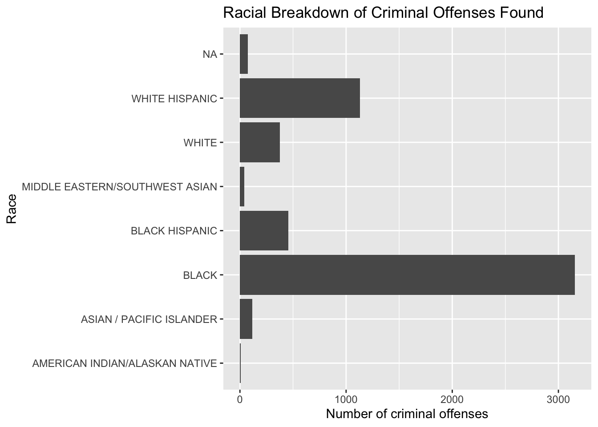

library(tidyverse) #load package
sqf_2023 <- read_rds("sqf_2023.rds") #loads data
options(tibble.width = Inf)Lab 02: 2023 NYPD Stop, Question, Frisk
Practice summarizing data and investigating political claims
Acknowledgements
This lab is adapted from a Skew the Script activity.
Introduction
New York City’s Stop, Question, Frisk program allows police to stop people on the street and search them for weapons or contraband. During a stop, if police find evidence of criminal items or activity, they report a criminal offense. Then, they can make an arrest or issue a summons. NYPD officers record detailed data on every stop. This NYPD data is publicly available on the NYC.GOV website. The sqf_2023 dataset contains data from all stops in 2023.
The goal of this lab is to use data to explore a social good question and to help you practice summarizing data by computing sums, proportions, and measures of center and spread.
Getting Started: NYPD Data
The orginal data from NYPD has 82 columns, with details on many aspects of each stop, question, frisk encounter. For this analysis, we will explore only the first 15 columns. For convenience & ease of use, we will create a new dataset with just these 15 columns. We’ll call the new data frame sqf_selected.
#creates dataset with fewer columns needed for analysis
sqf_selected <- sqf_2023 |>
select(1:15)
glimpse(sqf_selected)Rows: 16,971
Columns: 15
$ stop_id <dbl> 1, 2, 3, 4, 5, 6, 7, 8, 9, 10, 11, 12, 13, 14…
$ stop_frisk_date <date> 2023-01-01, 2023-01-01, 2023-01-01, 2023-01-…
$ stop_frisk_time <chr> "00:44:00", "00:49:00", "05:31:00", "04:59:00…
$ year2 <dbl> 2023, 2023, 2023, 2023, 2023, 2023, 2023, 202…
$ month2 <ord> January, January, January, January, January, …
$ day2 <ord> Sunday, Sunday, Sunday, Sunday, Sunday, Sunda…
$ stop_duration_minutes <dbl> 10, 3, 5, 2, 14, 19, 1, 5, 25, 10, 13, 1, 10,…
$ suspect_arrested_flag <fct> N, Y, N, N, Y, N, N, N, N, Y, Y, N, Y, Y, N, …
$ summons_issued_flag <fct> N, N, N, N, N, N, N, N, N, N, N, N, N, N, N, …
$ suspect_reported_age <dbl> 32, 23, 30, 20, 25, 14, 26, 41, NA, 65, 29, N…
$ suspect_sex <fct> MALE, MALE, MALE, MALE, MALE, MALE, MALE, MAL…
$ suspect_race_description <fct> BLACK, WHITE HISPANIC, WHITE HISPANIC, BLACK,…
$ suspect_height <dbl> 6.10, 5.70, 6.00, 6.00, 6.00, 6.10, 5.40, 5.9…
$ suspect_weight <dbl> 150, 150, NA, 275, 190, 145, 170, 148, 180, 2…
$ stop_location_boro_name <fct> MANHATTAN, BROOKLYN, BROOKLYN, QUEENS, BRONX,…Summarizing Data
The summary function
The summary() function in R is very convenient for getting a quick summary of every variable in a dataset.
summary(sqf_selected) stop_id stop_frisk_date stop_frisk_time year2
Min. : 1 Min. :2023-01-01 Length:16971 Min. :2023
1st Qu.: 4244 1st Qu.:2023-04-02 Class :character 1st Qu.:2023
Median : 8486 Median :2023-06-27 Mode :character Median :2023
Mean : 8486 Mean :2023-06-29 Mean :2023
3rd Qu.:12728 3rd Qu.:2023-10-03 3rd Qu.:2023
Max. :16971 Max. :2023-12-31 Max. :2023
month2 day2 stop_duration_minutes suspect_arrested_flag
October:1734 Sunday :2283 Min. : 0.000 N:12071
May :1647 Monday :1771 1st Qu.: 2.000 Y: 4900
April :1544 Tuesday :2614 Median : 5.000
January:1468 Wednesday:2790 Mean : 8.231
July :1439 Thursday :2501 3rd Qu.: 10.000
March :1407 Friday :2466 Max. :581.000
(Other):7732 Saturday :2546
summons_issued_flag suspect_reported_age suspect_sex
N:16459 Min. : 0.00 FEMALE: 1028
Y: 512 1st Qu.: 19.00 MALE :15669
Median : 25.00 NA's : 274
Mean : 27.75
3rd Qu.: 34.00
Max. :118.00
NA's :2529
suspect_race_description suspect_height suspect_weight
BLACK :9939 Min. :0.000 Min. : 0.0
WHITE HISPANIC :3447 1st Qu.:5.300 1st Qu.:150.0
BLACK HISPANIC :1719 Median :5.700 Median :160.0
WHITE : 942 Mean :5.644 Mean :165.7
ASIAN / PACIFIC ISLANDER: 288 3rd Qu.:5.900 3rd Qu.:180.0
(Other) : 164 Max. :9.200 Max. :760.0
NA's : 472 NA's :1482 NA's :1825
stop_location_boro_name
BRONX :6689
BROOKLYN :3984
MANHATTAN :3343
QUEENS :2393
STATEN ISLAND: 562
For categorical variables, it will provide counts of the number of observations in each category level. For numeric variables, it will provide the minimum value, Q1, the median, the mean, Q3, and the maximum value. It also tells you the number of observations that are missing (NA) for each variable.
Using summarize() to compute chosen summary statistics
How old do people who are stopped, questioned, and frisked by the NYPD tend to be?
The following code allows us to answer this question:
sqf_selected |>
summarize(avg_age = mean(suspect_reported_age,
na.rm = TRUE))# A tibble: 1 × 1
avg_age
<dbl>
1 27.7We would read the above code as “take the sqf_selected dataset, and then summarize it by calculating the mean of suspect_reported_age. When calculating the mean, remove any missing values (na.rm = TRUE).”
We call the |> symbol the “pipe” operator, and we read it as “and then”. E.g. “take the dataset and then pipe it into the summarize() function”.
Note, avg_age is a user-defined name of the summary statistic we’re computing. We could have called it mean_age instead if we wanted. Or unicorn for that matter. But, it’s best to give them INFORMATIVE names.
sqf_selected |>
summarize(mean_age = mean(suspect_reported_age,
na.rm = TRUE))# A tibble: 1 × 1
mean_age
<dbl>
1 27.7sqf_selected |>
summarize(unicorn = mean(suspect_reported_age,
na.rm = TRUE))# A tibble: 1 × 1
unicorn
<dbl>
1 27.7As show in the lecture notes, we can compute multiple summary statistics within one summarize() function. We simply need to separate them by a comma. They will each be a new column in the output.
sqf_selected |>
summarize(mean_age = mean(suspect_reported_age,
na.rm = TRUE),
var_age = var(suspect_reported_age,
na.rm = TRUE),
sd_age = sd(suspect_reported_age,
na.rm = TRUE))# A tibble: 1 × 3
mean_age var_age sd_age
<dbl> <dbl> <dbl>
1 27.7 142. 11.9sqf_selected |>
summarize(Q1_age = quantile(suspect_reported_age, 0.25,
na.rm = TRUE),
Q2_age = quantile(suspect_reported_age, 0.5,
na.rm = TRUE),
med_age = median(suspect_reported_age,
na.rm = TRUE),
Q3_age = quantile(suspect_reported_age, 0.75,
na.rm = TRUE),
IQR_age = IQR(suspect_reported_age,
na.rm = TRUE))# A tibble: 1 × 5
Q1_age Q2_age med_age Q3_age IQR_age
<dbl> <dbl> <dbl> <dbl> <dbl>
1 19 25 25 34 15Summarizing categorical data
Recall that during a search & frisk, if police discover contraband or evidence of criminal activity, they can issue an arrest or a summons to appear in court. If no evidence of wrongdoing is found, the person is free to go. Therefore, each stop, question, frisk encounter can end in three ways:
- the person is arrested (
suspect_arrested_flaghas the value “Y”) - the person is issued a summons (
summons_issued_flaghas the value “Y”) - no evidence of wrongdoing is found (both variables above have the value “N”)
The first two mean some evidence of criminal activity was found & reported and the third means no evidence of criminal activity was found & reported. We will create one new variable (criminal_offense_reported) to indicate whether or not criminal activity was found & reported.
sqf_selected <- sqf_selected |>
mutate(criminal_offense_reported = if_else(suspect_arrested_flag == "Y" | summons_issued_flag == "Y", "Y", "N"))This new variable, criminal_offense_reported is a categorical variable. We can summarize a categorical variable using a proportion. This proportion - of stops that result in evidence of criminal activity - is of policy interest. Critics say SQF results in too many innocent people having their civil liberties violated. Proponents say it is a necessary and useful program for keeping drugs and guns off the streets. Let’s investigate how often NYPD SQFs result in evidence of criminal activity being found.
What proportion of NYPD stop, question, frisk encounters find evidence of criminal activity?
We can again use the summarize() function to help us summarize the data. We’ll first calculate the number of stops made in total using the n() function and the number of stops where a crime was found using the sum() function. We’ll then use those counts to compute our desired proportion, prop_crime_found.
sqf_selected |>
summarize(n_stops = n(),
n_crime_found = sum(criminal_offense_reported == "Y")) |>
mutate(prop_crime_found = n_crime_found/n_stops)# A tibble: 1 × 3
n_stops n_crime_found prop_crime_found
<int> <int> <dbl>
1 16971 5358 0.316Comparing across groups
In Lab 01, we saw that we could compare a numeric variable across groups using a faceted histogram. Below, we investigate age of persons stopped, questioned, and frisked by NYC borough.
ggplot(sqf_selected, aes(x = suspect_reported_age)) +
facet_wrap(~stop_location_boro_name, ncol = 1) +
geom_histogram(color = "white")`stat_bin()` using `bins = 30`. Pick better value with `binwidth`.Warning: Removed 2529 rows containing non-finite outside the scale range
(`stat_bin()`).Using group_by()
Often, we want actual numeric summaries of the data to supplement the visualizaion. We can very conveniently calculate the median (or any other summary statistic) for each level of a categorical variable by adding the group_by() function before we summarize.
sqf_selected |>
group_by(stop_location_boro_name) |>
summarize(med_age = median(suspect_reported_age,
na.rm = TRUE))# A tibble: 5 × 2
stop_location_boro_name med_age
<fct> <dbl>
1 BRONX 23
2 BROOKLYN 25
3 MANHATTAN 28
4 QUEENS 25
5 STATEN ISLAND 25If certain areas are policed more than would be expected based on population size, we might want to investigate why. NYPD has been criticized for racial bias in its policing and “over-policing” neighborhoods of color. Former NYC Mayor Michael Bloomberg, who expanded Stop, Question, Frisk, speaking about the program said (Aspen Institute, 2015):
“People say, ‘Oh my God, you are arresting kids for marijuana who are all minorities.’ Yes, that’s true. Why? Because we put all the cops in the minority neighborhoods. Yes, that’s true. Why’d we do it? Because that’s where all the crime is.”
Today, advocates for Stop and Frisk make similar claims. Are these claims supported by the data? Let’s investigate. We’ll look at prevalence of criminal activity among Boroughs first, to see if we can explain the discrepancy in stop rates. Later, you will conduct the same analysis by race.
The code below uses the same code as Exercise 3, but we now add a group by to see how often criminal activity is found in stops in each borough.
sqf_selected |>
group_by(stop_location_boro_name) |>
summarize(n_stops = n(),
n_crime_found = sum(criminal_offense_reported == "Y")) |>
mutate(prop_crime_found = n_crime_found/n_stops,
prop_no_crime_found = 1 - prop_crime_found)# A tibble: 5 × 5
stop_location_boro_name n_stops n_crime_found prop_crime_found
<fct> <int> <int> <dbl>
1 BRONX 6689 1250 0.187
2 BROOKLYN 3984 1546 0.388
3 MANHATTAN 3343 1302 0.389
4 QUEENS 2393 1020 0.426
5 STATEN ISLAND 562 240 0.427
prop_no_crime_found
<dbl>
1 0.813
2 0.612
3 0.611
4 0.574
5 0.573This same data is displayed as a segemented bar graph:
ggplot(sqf_selected, aes(y = stop_location_boro_name,
fill = criminal_offense_reported)) +
geom_bar(position = "fill") +
labs(x = "Proportion",
y = "")We know that location / neighborhood tends to be associated with racial/ethnic demographics. For example, as of the 2020 Census1, the Bronx had a much higher proportion of Hispanic and Black residents and lower proportions of White and Asian residents compared to NYC as a whole.
| Race/Ethnicity | Bronx | All of NYC |
|---|---|---|
| Hispanic | 54.8% | 28.3% |
| White non-Hispanic | 8.9% | 30.9% |
| Black non-Hispanic | 28.5% | 20.2% |
| Asian non-Hispanic | 4.6% | 15.6% |
One of the primary critiques of NYPD Stop, Question, Frisk is that is has disproportionately affected neighborhoods and people of color. In Mayor Bloomberg’s comments, he argues that people of color are getting arrested more frequently because they live in neighborhoods where more crime is happening. Again, let’s use the data to investigate both of these claims 1) whether people of color are stopped at dispropirtionate rates (critics claim) and 2) whether crime rates are higher among people of color (Mayor’s claim).
The code below calculates the number and proportion of stops by race.
sqf_selected |>
group_by(suspect_race_description) |>
summarize(n_stops = n()) |>
mutate(prop_stops = n_stops/sum(n_stops))# A tibble: 8 × 3
suspect_race_description n_stops prop_stops
<fct> <int> <dbl>
1 AMERICAN INDIAN/ALASKAN NATIVE 22 0.00130
2 ASIAN / PACIFIC ISLANDER 288 0.0170
3 BLACK 9939 0.586
4 BLACK HISPANIC 1719 0.101
5 MIDDLE EASTERN/SOUTHWEST ASIAN 142 0.00837
6 WHITE 942 0.0555
7 WHITE HISPANIC 3447 0.203
8 <NA> 472 0.0278 There does seem to be evidence that some demographic groups are stopped, questioned, and frisked at rates disproportionate to their proportion of the population. Let’s now investigate whether there is evidence to back up Mayor Bloomberg’s claim that this is because of differences in criminal activity.
Suppose an advocate for the Stop, Question, Frisk program takes the same data from the lab and performs a new analysis that looks at the racial breakdown among criminal offenses reported. They claim that their analysis provides strong evidence for Bloomberg’s claim. See their results below:
sqf_selected |>
filter(criminal_offense_reported == "Y") |>
ggplot(aes(y = suspect_race_description)) +
geom_bar() +
labs(title = "Racial Breakdown of Criminal Offenses Found",
x = "Number of criminal offenses",
y = "Race")
sqf_selected |>
filter(criminal_offense_reported == "Y") |>
group_by(suspect_race_description) |>
summarize(n_criminal_offenses = n()) |>
mutate(prop = n_criminal_offenses/sum(n_criminal_offenses))# A tibble: 8 × 3
suspect_race_description n_criminal_offenses prop
<fct> <int> <dbl>
1 AMERICAN INDIAN/ALASKAN NATIVE 9 0.00168
2 ASIAN / PACIFIC ISLANDER 118 0.0220
3 BLACK 3154 0.589
4 BLACK HISPANIC 455 0.0849
5 MIDDLE EASTERN/SOUTHWEST ASIAN 42 0.00784
6 WHITE 375 0.0700
7 WHITE HISPANIC 1129 0.211
8 <NA> 76 0.0142 Footnotes
https://popfactfinder.planning.nyc.gov/explorer/cities/NYC?censusTopics=mutuallyExclusiveRaceHispanicOrigin%2CdetailedRaceAndEthnicity&compareTo=2↩︎